|
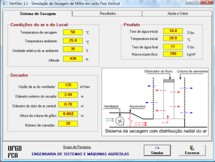 VertSEC
-
1.3 beta
Simula a secagem de grãos em altas temperaturas, usando secador de
leito fixo horizontal, permitindo a simulação de secagem de milho o
consumo de energia.
Programa
computacional para simular a secagem de milho em secador com
distribuição radial do ar.
Freeware
|
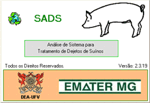 SADS Suíno 2.3
Programa computacional para analisar e auxiliar o dimen-sionamento de sistemas de tratamento de água proviniente de suinocultura.
Programa
computacional para análise e dimensionamento de sistemas para
tratamento de dejetos em suinocultura. In:
CONBEA, Goiânia, 2003.
Freeware |
|
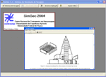 SimSec 4.3
O SimSec simula a secagem de grãos em altas temperaturas. Os secadores do tipo leito fixo horizontal e os secadores intermitentes dos tipos fluxos cruzados, fluxos concorrentes, fluxos contracorrentes e tipo cascata podem ser simulados utilizando-se o SimSec. Este programa permite a simulação de secagem de milho e milho em espiga. Como resultados são apresentados as propriedades finais do ar e do produto e o consumo de energia durante o processo. (copyright Centreinar)
www.centreinar.org.br |
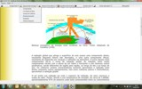
Enersol |
|
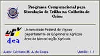 SimTrilha
Feijão 1.1
Programa
computacional para simulação do processo de trilha e separação
em uma colhedora de feijão de fluxo axial.
Modelagem
do processo de trilha e separação mecânica do feijão em uma
colhedora de fluxo axial. In: CONBEA, Salvador, 2002.
|
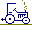 SimTractor
1.5
Programa computacional para predição da capacidade tratória de tratores agrícolas de pneus.
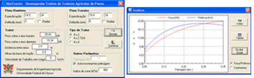 Simulación del rendimiento de tractores agrícolas de ruedas. Revista Ciencias Técnicas Agropecuarias, Habana, v.11, n.2, 2002. Freeware |
|
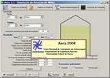 AREA 2004
Versão: 2.3
O AERA permite a simulação da aeração levando em consideração uma série histórica de dados meteorológicos, com condições de temperatura e umidade relativa ambiente fixa e com dados meteorológicos típicos por estação do ano. (copyright Centreinar)
Simulação de controle da aeração do milho para a região de Dourados - MS. In: Congresso Nacional de Milho e Sorgo, Belo Horizonte, 2006. www.centreinar.org.br |
EtaGRÃO 4.6
Programa computacional para determinação da entalpia de vaporização da água de produtos agrícolas. 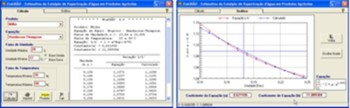
Programa computacional para determinação da entalpia de vaporização da água de produtos agrícolas. In: CONBEA, Poços de Caldas, 1998.
Comparación de modelos matemáticos para descripción de las curvas de entalpia de vaporización de agua de diferentes productos agrícolas. In: AgrIn, Habana, 2006.
Freeware
|
|
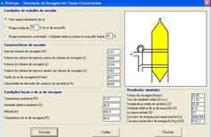 VicDryer
Versão: 2.0
O VicDryer permite a simulação de secagem de café despolpado e em coco. Para analisar as condições de trabalho do secador, o usuário tem a opção de reaproveitar parte do ar de exaustão, entre outras.
VicDryer - Um programa computacional para simulação de secagem em altas temperaturas. In: Congresso da SBIAGRO, Porto Seguro, 2003. www.centreinar.org.br |
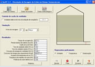 SecBT
Versão: 3.0
O SecBT permite a simulação de secagem de milho, arroz e soja em baixas temperaturas, podendo ser determinada a perda máxima de matéria seca do produto durante o processo.
Simulação de secagem de milho e arroz em baixas temperaturas. In: Congresso da SBIAGRO, Porto Seguro, 2003.
Simulação de secagem de milho safrinha em baixas temperaturas para diferentes umidades de colheita. In: IX Seminário Nacional de Milho Safrinha, Dourados, 2007. www.centreinar.org.br
|
|
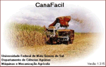 CanaFácil 1.3
- Colheita
Programa computacional para auxiliar o ensino de colheita de cana-de-açúcar. Freeware |
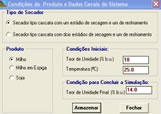 Scascata
Versão: 3.0
O Scascata realiza a simulação de secadores tipo cascata com e sem reaproveitamento do ar. O programa utiliza todas as variáveis associadas ao processo de secagem.
www.centreinar.org.br
|
DinaSilo
Versão: 4.3
Programa para dimensionamento da capacidade dinâmica de unidades armazenadoras
Freeware |
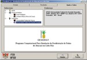 Desidrat
Versão: 1.2 beta
O Desidrat simula a secagem de abacaxi em secadores de leito fixo. O programa utiliza todas as variáveis associadas ao processo de secagem.
Programa computacional para simular a secagem de abacaxi em secador de leito fixo. In: IX Congreso Argentino de Ingeniería Rural y I del MERCOSUR, 2007, Córdoba. La ingeniería rural y el cambio climático, 2007.
Freeware
|
|
ULTRASec
Versão: 1.0
Programa para simulação e análise de custo de sistemas de secagem de grãos (copyright ULTRAGAZ Ltda.) |
PASIM 2D
Projeto e análise de sistemas mecânicos por computador
Freeware |